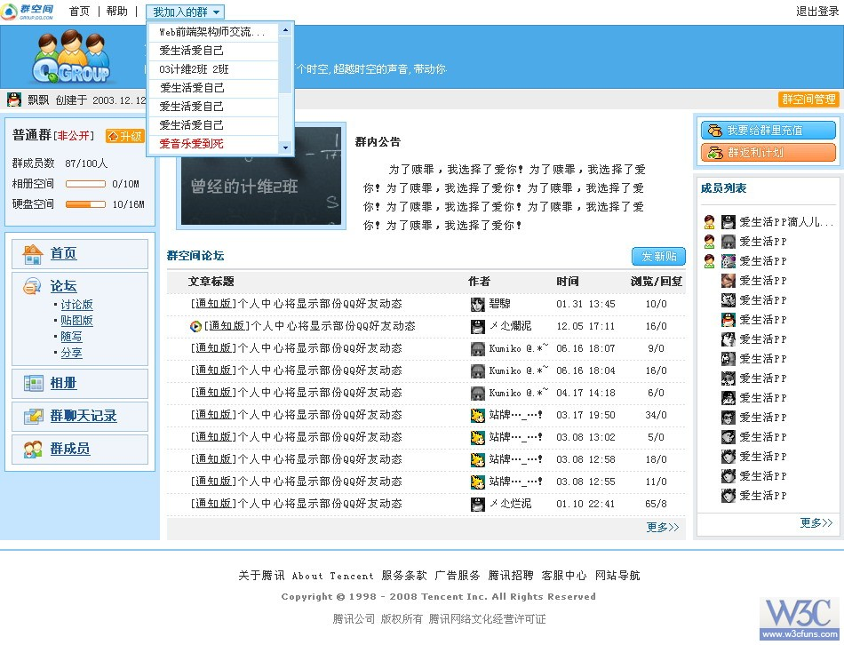

注意：
1、相册空间\硬盘空间的进度条,考虑百分比的控制
2、左中右三栏等高，整个页面的宽度不固定，左右宽度固定，中栏自宽度适应。论坛的文章标题也自适应宽
3、加“...”的地方，考虑过长溢出省略处理
4、假如这是一个访问PV达2000W/日，因成本限制，网络带宽可能满足不了此访问量，会出现滞连情况，样式文件可能加载不了，且，中栏内容是最重要且要呈现在用户眼前的。(也就是说,在无样式不完全加载情况下,中栏内容要优先左右两栏前)
5、关注标签语义化
6、关注提交的页面原型便于团队合作，开发实现。
7、关注HTTP请求和带宽消耗所带来的体验和成本
